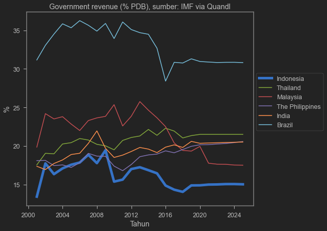
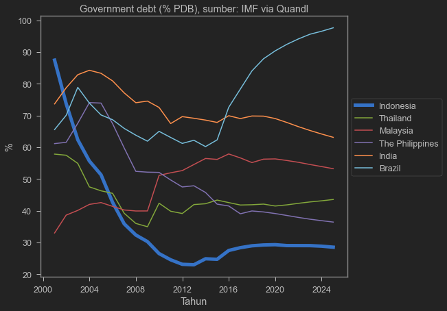

Ilmu Ekonomi
Pertemuan 11
Prodi PIWAR Politeknik APP Jakarta
Recap on last week
Short run impact of shocks:
| Positive demand |
\(\overrightarrow{AD}\) |
\(\Uparrow\) |
\(\Uparrow\) |
\(\Downarrow\) |
| Negative demand |
\(\overleftarrow{AD}\) |
\(\Downarrow\) |
\(\Downarrow\) |
\(\Uparrow\) |
| Positive supply |
\(\overrightarrow{SRAS}\) |
\(\Downarrow\) |
\(\Uparrow\) |
\(\Downarrow\) |
| Negative supply |
\(\overleftarrow{SRAS}\) |
\(\Uparrow\) |
\(\Downarrow\) |
\(\Uparrow\) |
Recap on last week
- In the short-run, wage does not change (sticky wage):
- when economy expand (ie, when Y \(\Uparrow\)), unemployment go down (more jobs created).
- In the long-run, wage follows prices:
- when price went up, wage goes up in the long-run.
- when price went down, wage goes down in the long-run.
- These mechanisms returns \(Y\) and unemployment back to their potential/natural level.
Fiscal policy
- Basically related to government expenditure (APBN+APBD)
- The government gets its revenue from (mostly) taxes
- Disburse the money through government projects and subsidy transfers
- What we consider fiscal policy are:
- increase/decrease government expenditure.
- changes in taxes.
- changes in government debt.
Fiscal policy
- Recall the basic equation of GDP:
\[GDP=C+I+G+X-IM\]
Expansionary fiscal policy
- When there’s negative demand shock, the economy enters a recession (\(Y \Downarrow\))
- Unemployment \(\Uparrow\) as the economy works under-capacity.
- Government can speed up returns to the potential output level \(Y_P\) by using expansionary fiscal policy such as:
- Increase government spending
- tax cuts.
- Increase in government transfers (bansos,subsidi).
Contractionary fiscal policy
On the contrary, an overheat economy causes a big increase in prices.
\(Y \Uparrow\) in the short run but inflation can be uncontrollable and a bubble may burst.
Government can reduce the speed of price hike by using contractionary fiscal policy like:
- Reduce government spending.
- Increase taxes.
- Reduce government transfers.
Does it work?
Expansionary fiscal policy should be done during a recession:
- During a recession, economy runs below capacity.
- Only the government can spend without fear of the future.
In general, Indonesian economists are agree to high spending during a recession.
It may not work to offset a supply shock, but most recessions are caused by demand shock.
Government spending vs tax cut
- We have learned that taxes distort perfect markets.
- lowering taxes reduce DWL.
- However, some arguments can be made for government spending:
- Some will only spend some, but not all (saving instead).
- Government spending can be 100% purchases.
- (Income) Tax cut can be ineffective in a country where most people doesn’t pay tax.
Ricardian equivalence
Without altering tax, increased government spending must come from debt which creates government deficit.
Those debt needs to be paid in the future by rising taxes.
Forward looking people knows this. They might reduce consumption and save to pay the future taxes.
This is called Ricardian Equivalent: income from government consumption will be saved to pay future taxes, eliminating effects of expansionary policy.
Ricardian equivalent
In the short-run, people will not save equals to the future tax.
- They can spread their saving in to a longer time-span.
Most people will not even aware about how to calculate the debt and the tax needed to pay them in the future.
Therefore, Ricardian equivalent is not a big problem.
Lags in fiscal policy
Expansionary fiscal policy is also a race against time.
There are reasons why government disbursement is slow:
- Lack of data on who to transfers
- Inefficient bureaucracy
Disbursement that is too slow risks overheating and inflation if the economy already returned to the optimal output.
Long-run implication of Fiscal Policy
Without proper tax revenue, government needs to run a fiscal deficit which is financed by debt.
Running a deficit and accumulating debt often leads to a more political debate than economics.
Too much debt is problematic because it erodes trust from borrower.
- This is the case for Greece and Argentina.
What about Indonesia?
What about Indonesia?
 Compared to some countries, Indonesia’s tax revenue is very small. Increasing debt is necessary to boos spending
 On the contrary, Indonesia’s government debt level is low. Debt from 1998 crisis was paid during the good times of commodity boom.
However…

image
Indonesian bond is expensive. at around 6-7% interest rate, this potentially crowds out private investment!
COVID recession
| GDP |
5.0 |
-2.1 |
4.9 |
5.4 |
| private consumption \(C\) |
5.2 |
-2.7 |
3.6 |
7.1 |
| Government expenditure \(G\) |
3.3 |
1.9 |
-0.3 |
1.0 |
| CPI (inflation) |
3.0 |
1.9 |
2.1 |
3.0 |
| Fiscal balance (% GDP) |
-2.2 |
-6.5 |
-5.7 |
-4.1 |
COVID crushes demand. \(G\) helps, and it was financed by debt.
Source: OECD (2021), OECD Economic Surveys: Indonesia 2021, OECD Publishing, Paris, https://doi.org/10.1787/fd7e6249-en.
Fiscal policy during normal times?
- During normal times, economy runs at 100% capacity:
- government spending will only crowds out private spending.
- risks inflation.
- Private firms borrows and invest normally.
- government’s debt rises interest rate which is not good for business.
What about negative supply shock?
For example, oil price increase:
- We can’t just make oil or quickly change our technology
Fukushima shock: can’t just find/make replacement firms.
Negative supply shock leads to stagflation:
- government has to pick a lesser evil:
- reduce inflation or reduce unemployment.
The Financial System
So far we have talking about AD-AS, also known as real sector (sektor riil).
The other side of the coin is financial sector:
- We do not consume what it produces.
- But we use it for transaction.
- We use it to measure everything we do in the real sector.
This time we will learn about money, banking, and the central bank.
Money
Probably the oldest “money”
This is inefficient as some goods are:
- hard to carry around.
- hard to divide.
- hard to match.
- perishable (decreased in value over time)
At some point, people used gold and silver to facilitate barter.
Money
However, even gold is hard to carry around especially if you are rich.
People stash their gold in a place called bank, and received “bank note” as a proof that they own the gold.
Normally, one needed to go to bank, take the gold, and transact.
But in the end, people use the bank note itself. This bank note is our today’s currency.
Nowadays, banks can create money without having to have a gold in their stash.
Money
Money is any asset that can easily be used to purchase goods and services.
An asset is called liquid if we can easily convert it to cash.
We generally consider cash, bank cheques, and saving account as money because they are liquid.
What are considered non-liquid asset?
- house, cars, stocks, firms, what else?
Main roles of money
Medium of exchange. Everyone has to believe in its value. We normally use IDR. Sometimes, foreign money is used. Goods can also be used under certain circumstances.
Store of value. It has consistent value (not perishable over time)
Unit of account: the commonly accepted measure individuals use to set prices and make economic calculation.
Types of money
Commodity money is goods that is valuable to many people. Gold and silver, cigarettes, alcohol.
Commodity-backed money is a “paper money” that we can use to redeem a commodity (usually gold). Holders of these bank notes are guaranteed the gold (or other commodity) stated in the notes.
Fiat money is the money we know today. It only backed by the government’s word.
Advantages
Commodity-backed money makes transaction quicker than commodity money because a bank can generate more notes than it has gold.
- In normal times, people won’t redeem 100% of the gold. Banks just need to keep gold enough to satisfy daily demand.
Fiat money is even faster because banks do not need to hold anything. Some problems tho:
- It’s easier for counterfeit money to exists.
- Some central banks print too much money which leads to the money losing its value.
Measuring money supply
- M1 is the narrow definition:
- consists of cash, traveler’s checks, and other checkable bank deposits.
- M2 is a broader definition. It is M1 plus:
- saving account and time deposit (deposito).
- How much M1 and M2 circulate in the economy is largely controlled by the Central Bank
- Bank of Indonesia in our case.
Bank roles
Bank uses liquid assets in the form of deposit to finance illiquid investments of borrowers.
Banks cannot lend all of its assets: it has to store a small fraction in their own vault or in the central bank.
- These stored asset is called bank reserves.
- Bank reserves is not circulated in the market, hence not counted in M1 and M2.
In Indonesia, bank needs to have a reserve equals to 3.5% of its total loan.
- Also called reserve requirement ratio.
Bank Runs
In normal times, people usually don’t do anything with their saving account.
This way, banks can lend most of the money and reserve some for liquidity.
But if many lenders suddenly would like to withdraw money, bank would not have enough money.
- they might have to sell some asset.
When many people wants to withdraw money at the same time, we call it bank run.
Bank Runs
Bank runs happen when borrowers hear Bank is near collapsing.
However, just a rumour could create a real collapse if lenders decided to withdraw money together at the same time.
This can be contagious: a lost of faith in one bank could lead to lost of faith to the entire system.
- This happened in 1998 when several banks were closed.
Bank regulations
Deposit insurance. Indonesian depositors is insured (partially) by Lembaga Penjamin Simpanan (LPS)
Capital requirements. Bank is required to have a minimum capital or asset to be able to operate in Indonesia.
Reserve requirements. Currently is 3.5% but it used to be higher. It was lowered due to COVID-19 recession.
Discount window, where the central bank can lend money to private banks so they don’t have to sell their asset.
Money Creation
But then Joy come to Bank BeCAk to borrow Rp900k to buy shoes.
Bank BeCAk use its reserve it get from Panca:
- Bank BeCAk keep Rp 100k of its reserve, which comes from Panca
- Bank BeCAk credits Joy’s account Rp900k.
This leads to increased Rp900k in money supply: now there are Rp1.900k of money supply in the market!
Money multiplier
Suppose Joy buy the shoes from Liv.
Liv then deposit the money to another bank named Bank Madara.
- Bank Madara adds Rp900k to its reserve.
- Also credit Liv’s account Rp900k.
But like Bank BeCAk, Bank Madara can loan some of the fund and reducing its reserve!
The more money is circulated, the more expansionary the monetary condition is.
Next week
Money supply is reduced when:
- People keep their money out of the financial system
- Banks increase its reserves
These are usually happening in an uncertain time: a recession or even worse, a crisis.
Next week, we will learn how money supply and money demand interact with the real sector
We will also learn how Bank Indonesia plays a role in the economy.